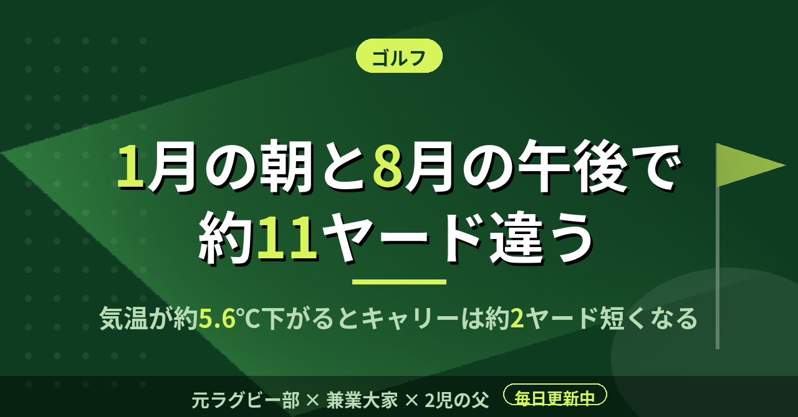

ゴルフ1月の朝と8月の午後で、キャリーは約11ヤード違う。冬も回る僕が平年値で数えた
ゴルフは社会人になってから、毎年最低でも月1回は回ってきた。シーズン中は月2〜3回になるが、冬もその1回は崩さない。寒い朝のティーショットが夏より手前に落ちる感覚はずっとあったが、それが何ヤードなのかを数えたことはなかった。
気温が約5.6℃下がるごとに2ヤード
アメリカのGOLF.comが2023年12月に紹介した、指導者アンドリュー・ライスがトラックマンで行った検証がある。気温華氏75度（約24℃）を基準に、華氏10度（約5.6℃）下がるごとに、どの番手でもキャリーが約2ヤード落ちる。逆に10度上がるごとに約2ヤード伸びる。ドライバーのキャリー250ヤードを基準にした表では、華氏35度（約2℃）で242ヤード、華氏95度（約35℃）で254ヤードになっていた。
理由は空気の密度だと説明されている。気温が下がると空気の密度が上がり、ボールが受ける空気抵抗が増える。スイングが同じでも、空気が変わればボールの飛び方は変わる。冬にスコアが崩れると腕や体のせいにしがちだが、少なくとも一部は空気のせいということになる。
大阪の平年値に当てはめると約11ヤード
気象庁の大阪の平年値（1991〜2020年）を見ると、1月の日最低気温は3.0℃、8月の日最高気温は33.7℃だ。冬の早朝スタートを1月の最低気温、真夏の午後を8月の最高気温とみなしてライスの目安に当てはめると、ドライバーのキャリーは1月の朝が約242.5ヤード、8月の午後が約253.5ヤードになる。差は約11ヤードだ。12月も日最低気温は5.3℃で、朝のスタートなら約243ヤードと1月とほとんど変わらない。一方で11月は日最高気温が17.8℃あり、昼のハーフなら約248ヤードで、夏との差はまだ小さい。差がはっきり出てくるのは、12月の朝のスタートからだ。
効いてくるのはドライバーよりアイアンだと思う。目安は「どの番手でも約2ヤード」なので、7番アイアンで150ヤード飛ぶ人でも、1月の朝は約7.5ヤード落ちて140ヤード台前半になる計算だ。グリーンまで150ヤードの場面で夏と同じ番手を持てば、ボールは手前に落ちやすい。ただし、これは一つの検証を基にした目安で、ヘッドスピードやボールの種類、風や標高でも変わる。僕は「冬の朝は1番手上げる」という判断の材料として使うだけにしている。
ボールを温めて打つのはルール違反
寒い日はボールを温めたくなる。ただ、ゴルフ規則4.2a(2)は、性能を故意に変えたボールでストロークすることを禁じていて、その例として「ボールを温める」ことをはっきり挙げている。違反してストロークした場合の罰は失格だ。カイロで温めたボールをティーアップする、というのはこの規則に触れる。
取引先と回る日でも、友人とのラウンドでも、ルールは同じだ。打つ側にできるのは、番手を上げることと、スタート前に体を冷やさないことくらいしかない。空気の重さは変えられないので、番手で合わせる。冬のゴルフは、それで十分だ。
この記事は note にも掲載しています。